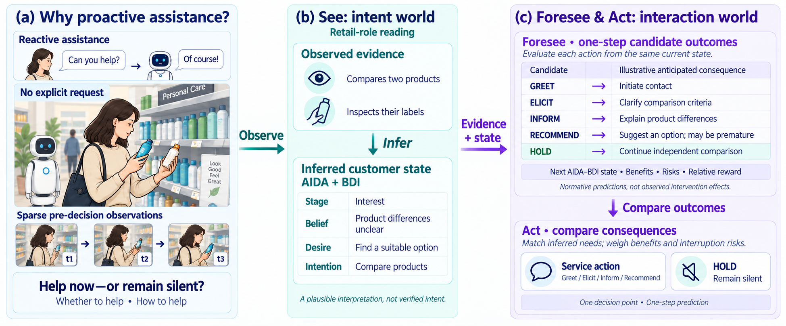
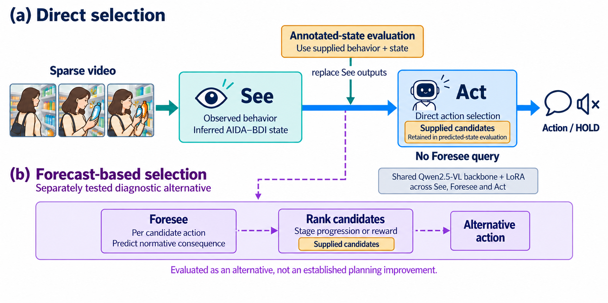
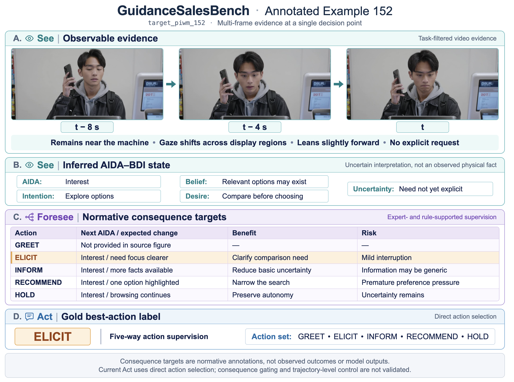

01
See
Translate sparse pre-decision video into explicit behavioral evidence plus an AIDA stage and BDI fields for belief, desire, and intention.
Observation → stateA customer comparing products, inspecting labels, or revisiting the same display may need assistance—or may simply prefer to explore independently. PIWM frames proactive retail assistance as a consequence-aware decision under incomplete observation.

A shared Qwen2.5-VL-7B-Instruct backbone with LoRA adaptation supports three structured tasks. The central world-modeling step is Foresee: an action-conditioned transition model over the customer state.
Translate sparse pre-decision video into explicit behavioral evidence plus an AIDA stage and BDI fields for belief, desire, and intention.
Observation → stateFrom the same current state, predict a one-step normative outcome, benefit, risk, and relative reward for each candidate action.
State + action → consequenceCompare candidate–consequence pairs, balancing inferred need, expected benefit, interruption risk, and the option to remain silent.
Consequences → decision
This interactive view reconstructs GuidanceSalesBench Annotated Example 152. It is a visualization of documented annotations—not live model inference and not observed intervention effects.
Remains near the machine.
Plausible task interpretation; not a directly observed fact.
Compare all five candidate targets, then choose the action annotated as best for this example.

All values below are copied from the public paper source. Full evaluation begins with sparse video and contains 509 held-out examples.
If you find PIWM useful in your research, please consider citing our work.
@misc{zhang2026piwm,
title = {See, Foresee, Act: Intent-Aware World Modeling for Proactive Retail Assistance},
author = {Zhang, Honghui and Min, Anna and Guo, Chenmeinian and Zhang, Yujia and Zhang, Zezhou and Yu, Yichen and Liu, Guanyu and Qin, Yongming and Song, Chongguo and Yang, Mengyue and Yu, Lei and Shi, Tianyu},
year = {2026},
eprint = {2606.03371},
archivePrefix = {arXiv},
primaryClass = {cs.CL},
doi = {10.48550/arXiv.2606.03371}
}